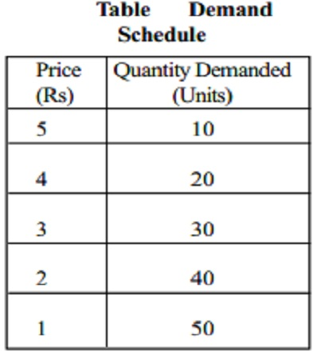

Tumutukoy sa dami ng produkto o serbisyo na gusto at kayang bilhin ng mga mamimili sa isang takdang presyo at partikular na panahon.
Batas ng Demand
Kapag tumataas ang presyo, bumababa ang dami ng gusto at kayang bilhin at kapag bumaba ang presyo, tataas naman ang dami ng gusto at kayang bilhin.
Ceteris Paribus
Nangangahulugang ipinagpapalagay na ang presyo lamang ang salik na nakaaapekto sa pagbabago ng quantity demanded, habang ang ibang salik ay hindi nagbabago o nakakaapekto rito.
DALAWANG KONSEPTONG NAGPAPALIWANAG KUNG BAKIT MAY MAGKASALUNGAT O INVERSE NA UGNAYAN SA PAGITAN NG PRESYO AT QUANTITY DEMANDED
Substitution Effect
Kapag tumataas ang presyo ng isang produkto, ang mga mamimili ay hahanap ng pamalit na mas mura. Sa ganon, mababawasan ang dami ng mamimiling gustong bumili ng produktong may mataas na presyo.
Income Effect
Kapag mababa ang presyo, mas mataas ang kakayahan ng kita ng tao na makabili ng mas maraming produkto. Kapag tumaas naman ang presyo, lumiliit ang kakayahan ng kita na makabili ng mga produkto o serbisyo kaya nababawasan ang dami ng mabibiling produkto.
Demand Function
Isang matematikong pagpapakita ng ugnayan ng presyo at quantity demanded sa pamamagitan ng formula: Qd = a - bP
QD= Dami ng demand
a= dami ng demand kung saan ang presyo ay 0
b= slope ng demand function
P= presyo
Demand Schedule
Isang tsart na nagpapakita ng bilang ng mga kalakal na hinihiling sa mga tiyak na presyo. Nagpapakita ito ng relasyon sa pagitan ng presyo at bilang ng mga gustong bilhin.
Demand Curve
Tumutukoy sa grapikong representasyon ng batas ng demand. Ipinapakita nito ang negatibong relasyon ng presyo ng produkto at bilang ng handang bilhin ng mamimili.
Mga Salik na Nakaaapekto sa Demand
- Kita
- Sa pagtaas ng kita ng isang tao, tumataas ang kaniyang kakayahan na bumili ng mas maraming produkto.
- Panlasa
- Kapag ang isang produkto o serbisyo ay naaayon sa iyong panlasa, maaaring tumaas ang demand para dito.
- Dahilan ng Mamimili
- "Bandwagon effect"
- Dahil sa dami ng bumibili ng isang produkto, nahihikayat kang bumili.
- Sumasabay sa uso.
- Presyo ng Magkaugnay na Produkto sa Pagkonsumo
- Ang mga komplementaryong produkto ay sabay ginagamit. Kapag nagbago ang presyo ng isa, naaapektuhan din ang demand ng kaugnay nito.
- Inaasahan ng mga Mamimili sa Presyo sa Hinaharap
- Kung inaasahan ng mga mamimili na tataas ang presyong isang partikular na produkto sa mga susunod na araw o linggo, asahan na tataas ang demand nito sa kasalukuyan habang mababa pa ang presyo nito
- Okasyon
- Ang mga Pilipino ay nagdiriwang kahit mahal ang mga bilihin
- Klima o Panahon
- Nag-iiba ang demand ng ibang produkto depende sa klima o panahon na halimbawa na tuwing pag-init ay mataas demand sa sando.
Price Elasticity of Demand
Ito ang paraan na ginagamit upang masukat ang pagtugon at kung gaano kalaki ang magiging pagtugon ng quantity demanded ng tao sa isang produkto sa tuwing may pagbabago sa presyo nito.